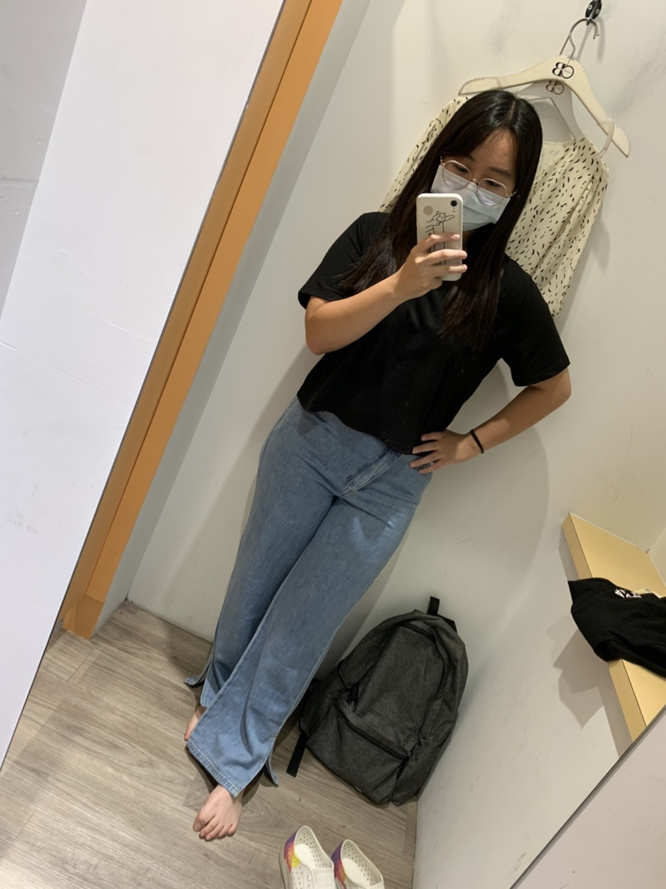
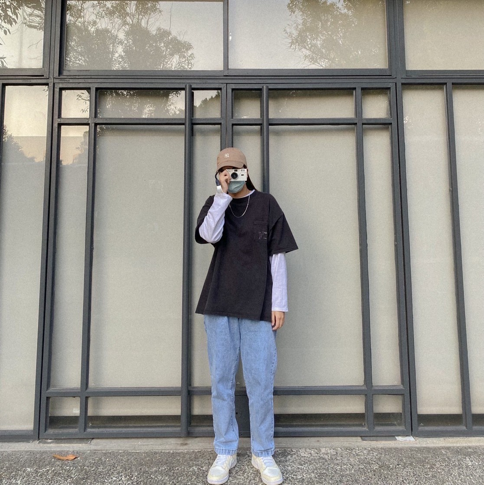
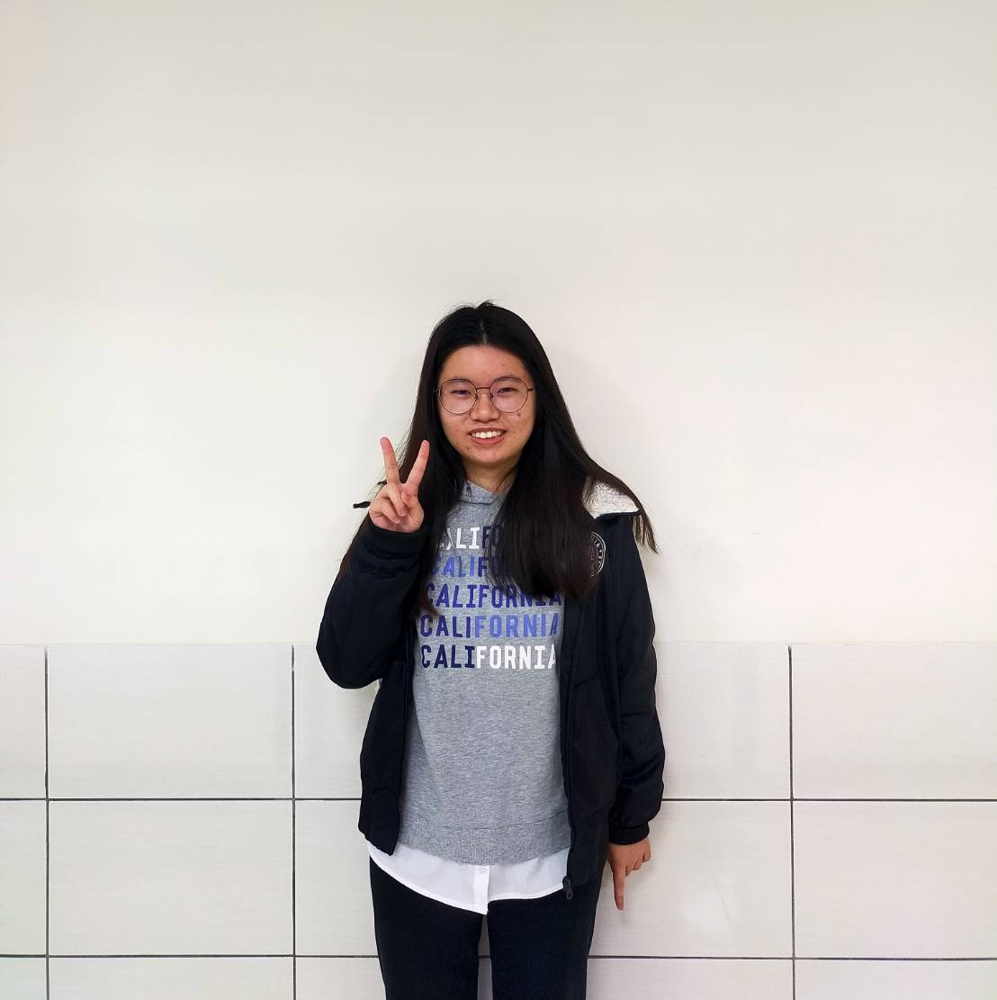
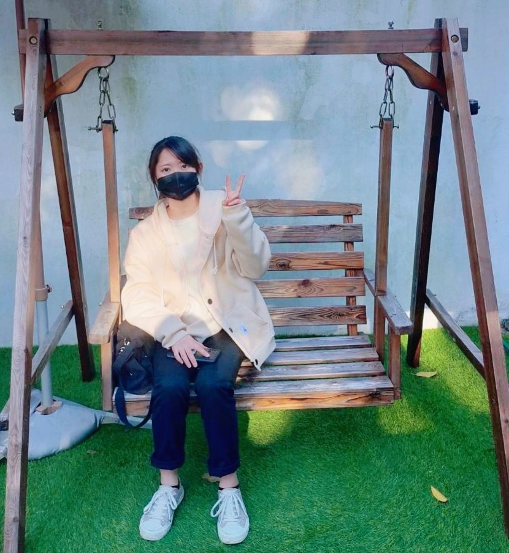

曾雯琪-前端

這學期的課程，我們是負責前端的部分，從構想網頁的排版設計到真的把網頁做出來，
真的不是件容易的事，常常有很多時候是想得很美好但做起來真的很困難，
但只要做出來真的會很有成就感，謝謝這堂課，還有我的組員們，
一起完成了這次的任務，希望以後有機會再專研相關的知識。
李佳蓁-前端
在做這項專案時真的蠻辛苦的，排版、配色和主題都來來回回討論了好幾次。
而跑版是我們在實作過程中遇到最大的問題，但後來將螢幕大小設定成100%去進行調整，問題就減少蠻多了。
除此之外，在整合前後端時也因為甲乙兩班不太了解雙方的內容遇到了一些困難，幸好最後都順利解決了。
雖然在做這項專案時常常會感到很累，但完成時真的會很有成就感，也謝謝我的組員們都盡心盡力的付出。
李芝穎-前端

這次學習前端才知道每個網頁設計師有多麼不容易，
除了程式碼還有版面問題配色問題，過程中有很多難題但可以和同學交流一項一項的去解決，
總體來說是一個很寶貴的經驗。
賴冠臻-後端

製作網站的過程非常具有挑戰，因為要清楚知道每個檔案和資料庫的連結
，讓整個網站更有邏輯和完整。我覺得製作的過程分工很重要，因為要每
個部分的份量不一樣卻又互相有關連，透過溝通才能更順利完成。大家遇
到困難一起討論是一件很有趣的事，最終成品出來的感覺很開心。
周佳穎-後端

這次的專案我學習到很多，從一開始構想資料庫，到登入控制、留言板、隱碼
攻擊，課程的節奏一步步帶領我們學習寫一個完整的網頁。在寫後端的過程
中，我們需要和前端做有效的溝通，才能呈現想要的樣子。過程中培養我對商
業和網站的邏輯，因此需要清楚的訂立網站的購物流程，才能使顧客的購物體
驗佳。看到我們的專案從分散的功能組合成一個完整的購物網站，覺得很踏實
且很有成就感。希望下學期做前端時可以藉這次的經驗進行的更順利!
孫珮珊-後端

這次的專案剛開始做時覺得很抽象，要把課程學到的知識融會貫通是很大
的挑戰。登入控制是我們花費最多時間做的功能，在一開始我們試著用程
式改寫發現網頁沒有變，於是詢問了助教才發現沒有寫action指定接收的
程式。在寫後端的時候，我們有明確的目標，知道成品要呈現什麼樣的功
能，故遇到不會的地方時就去努力找答案，透過「做中學」的方式，使我
更能夠了解網頁後端程式設計的實際情況。